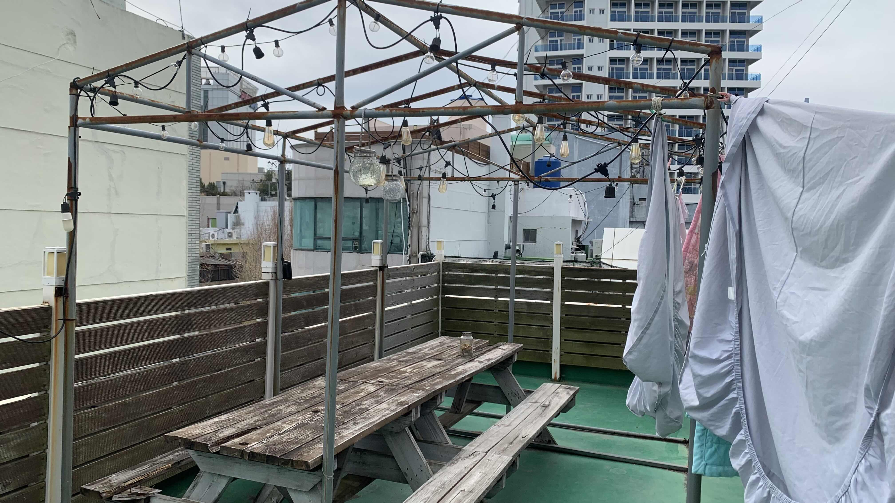
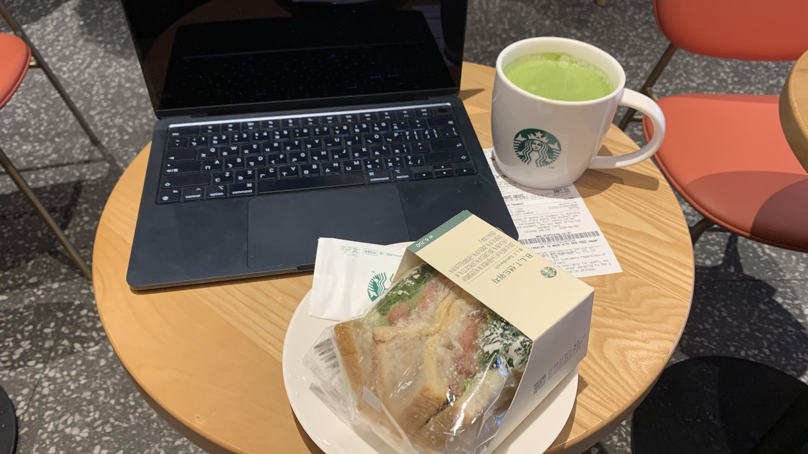
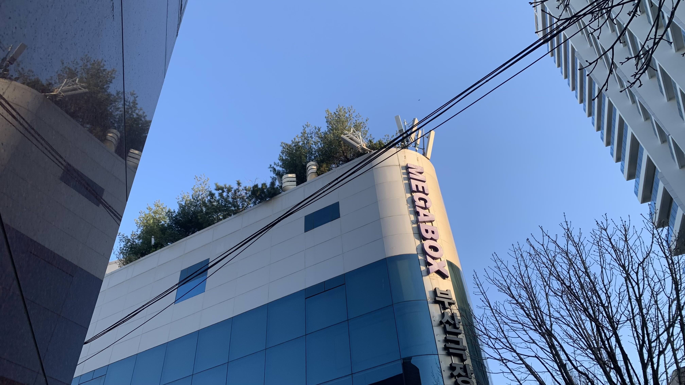
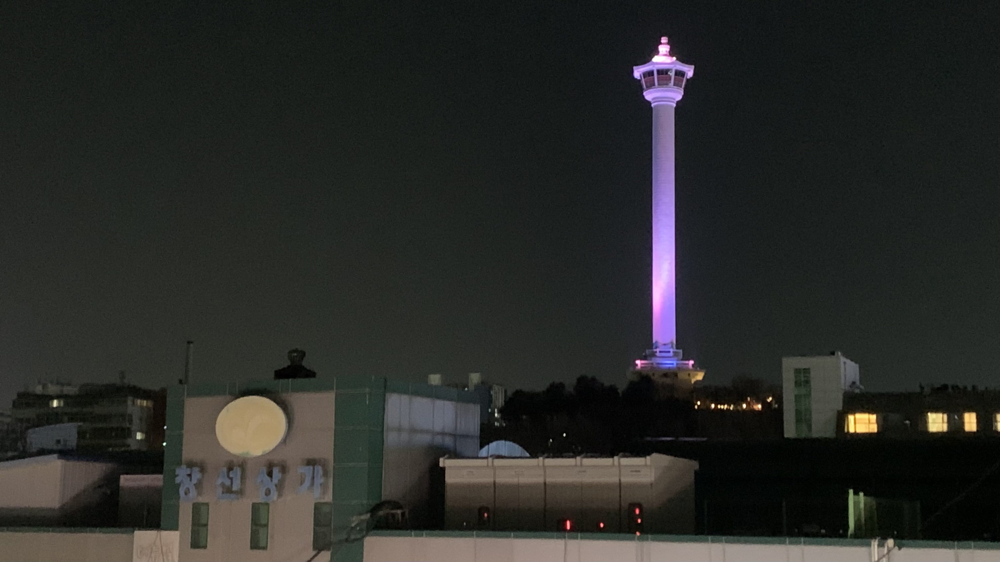

k-Day 018｜休息一天 One day off
今天的任務是洗衣服、上傳日誌、睡覺。

意外發現旅館可以免費洗衣，洗完衣服走到頂樓陽台，竟然還有這等好風景。因此就坐在這裡整理日誌。

直到下午肚子餓了，才走到旁邊的星巴克吃午餐。

回程的路上發現這裡的頂樓中的植栽是松樹。
晚上回到旅店後又到頂樓繼續跟網站的破圖奮戰。在頂樓發現一個發光的塔，莫非是釜山塔？

這三天都沒騎到什麼車，應該恢復的很好。睡前查了這週的天氣，連續七天的晴天。
今日花費： 星巴克 13600、住宿 582（台幣）